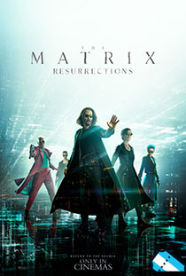
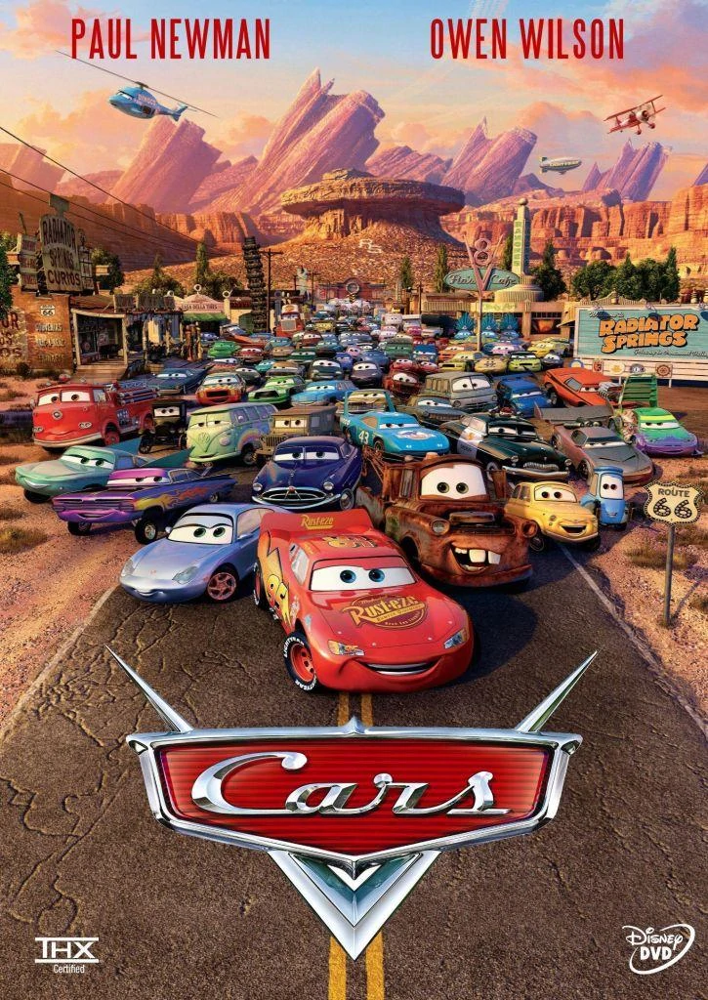
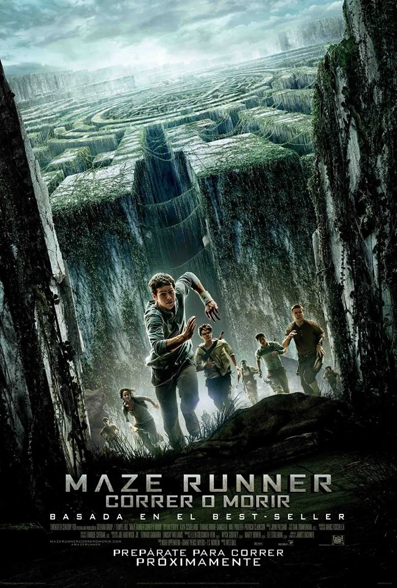

Matrix Resurrecciones

Estreno: 28 de enero de 2022
Acción, ciencia ficción, aventura | 2h 28m
Thomas Anderson lleva una vida cómoda como una eminencia dentro del mundo de los videojuegos, pero tiene
problemas para discernir entre lo que es realidad y lo que no lo es. Thomas deberá decidir si sigue al
conejo blanco una vez más.
Avengers: Infinity War

Estreno: 26 de abril de 2018
Acción, ciencia ficción | 2h 29m
"Vengadores: Infinity War" crea un viaje cinematográfico sin precedentes durante diez años y que abarca
todo el Universo Marvel. "Vengadores: Infinity War" de Marvel Studios trae a la pantalla el
enfrentamiento definitivo y más sangriento de todos los tiempos. Los Vengadores y sus superhéroes deben
estar dispuestos a sacrificar todo en un intento de derrotar al poderoso Thanos, antes de que sus planes
de devastación y ruina ponga fin al universo.
Titanic

Estreno: 5 de febrero de 1998
Cine romántico, catástrofe, drama | 3h 14m
Jack es un joven artista que gana un pasaje para viajar a América en el Titanic, el transatlántico más
grande y seguro jamás construido. A bordo del buque conoce a Rose, una chica de clase alta que viaja con
su madre y su prometido Cal, un millonario engreído a quien solo interesa el prestigio de la familia de
su prometida. Jack y Rose se enamoran a pesar de las trabas que ponen la madre de ella y Cal en su
relación. Mientras, el lujoso transatlántico se acerca a un inmenso iceberg.
Top Gun: Maverick

Estreno: 23 de agosto de 2022
Acción, aventura, drama | 2h 11m
Tras más de 30 años de servicio como uno de los mejores aviadores de la Armada, Pete "Maverick" Mitchel
se encuentra dónde siempre quiso estar, empujando los límites como un valiente piloto de prueba.
WALL-E

Estreno: 9 de julio de 2008
Ciencia ficción, comedia | 1h 38m
Tras cientos de años haciendo aquello para lo que fue construido: limpiar el planeta de basura, el
pequeño
robot Wall-e tiene una nueva misión cuando conoce a Eva.
Cars

Estreno: 26 de junio de 2006
Aventura, comedia | 1h 57m
El aspirante a campeón de carreras Rayo McQueen parece que está a punto de conseguir el éxito. Su actitud
arrogante se desvanece cuando llega a una pequeña comunidad olvidada que le enseña las cosas importantes
de la vida que había olvidado.
Los Cazafantasmas

Estreno: 14 de julio de 2016
Ciencia ficción, comedia, fantasía | 1h 47m
Al quedarse en paro, tres doctores en parapsicología crean una empresa para limpiar Nueva York de
ectoplasmas. Mítica comedia a cargo de Ivan Reitman.
Hombres de negro

Estreno: 17 de julio de 1997
Ciencia ficción, acción, comedia | 1h 38m
Durante muchos años los extraterrestres han vivido en la Tierra, mezclados con los seres humanos, sin que
nadie lo supiese. Los Hombres de Negro son agentes especiales que forman parte de una unidad altamente
secreta del gobierno; su misión consiste en controlar a los alienígenas. Dos de estos agentes (uno
veterano y otro recién incorporado), cuya misión consiste en vigilar a los alienígenas que viven en
Nueva York, descubren a un terrorista galáctico que pretende acabar con la Humanidad.
Maze Runner: correr o morir

Estreno: 16 de septiembre de 2014
Ciencia ficción, acción, thriller, misterio | 1h 53m
Thomas es un adolescente cuya memoria fue borrada y que ha sido encerrado junto a otros chicos de su edad
en un laberinto plagado de monstruos y misterios. Para sobrevivir, tendrá que adaptarse a las normas y a
los demás habitantes del laberinto.
IT

Estreno: 21 de septiembre de 2017
Terror, thriller, aventura, misterio | 2h 15m
Varios niños de una pequeña ciudad del estado de Maine se alían para combatir a una entidad diabólica que
adopta la forma de un payaso y desde hace mucho tiempo emerge cada 27 años para saciarse de sangre
infantil.